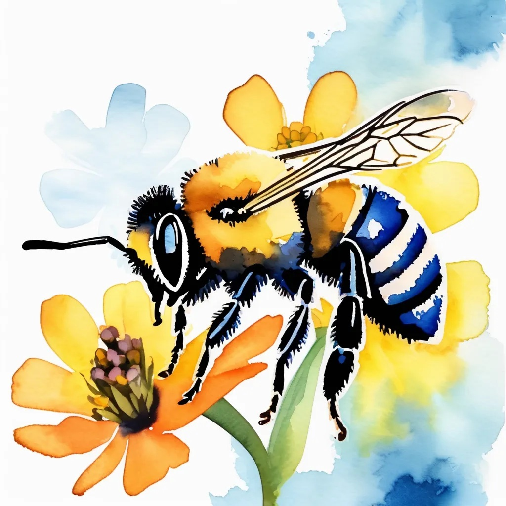

Home
PVCC
W3 Schools
Contact Us
Isabell Davis
Textbook Chapters
Chapter 0: Seven Big Ideas of Computer Science
Civic Engagement
Chapter 1: Date Storage
Chapter 2: Machine Architecture
Chapter 3: Operating Systems Terminology
Chapter 4: Networking & The Internet
Chapter 5: Programming Algorithms & Software Testing
Chapter 6: Programming Language
Chapter 7: Software Engineering
CSC 221 Web Pages
Hello World
Brownsville Bagels Menu
The Major Planets in Our Solar System
All About GitHub
Midterm Chapter 3
Civic Engagement Projects
C.E. project will go here...
CSC 221 Python Programs
Python programs will go here...
